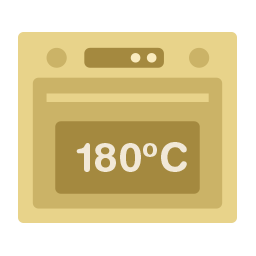
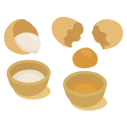
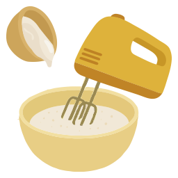

Receta - Brazo de Gitano
Ingredientes

4 claras de huevo

4 yemas de huevo

3 cucharadas de agua tibia

125 g de azúcar

1 sobre de azúcar avainillada (aprox. 8 g)

75 g de harina de trigo

50 g de harina de maíz (maicena)

½ sobre de levadura química (polvo de hornear, aprox. 7 g)

Crema de avellana (al gusto)

Azúcar glas para espolvorear
Procedimiento
Paso 1

Precalienta el horno a 180 °C con calor arriba y abajo
Paso 2

Separa las claras y las yemas
Paso 3

Bate las claras a punto de nieve y resérvalas
Paso 4

Bate las yemas con el agua tibia hasta que espumen
Paso 5

Añade el azúcar y el azúcar avainillado poco a poco, batiendo hasta que la mezcla doble su volumen
Paso 6

Mezcla y tamiza la harina de trigo, la harina de maíz y la levadura
Paso 7

Incorpora esta mezcla seca a las yemas batidas con movimientos suaves
Paso 8

Agrega las claras montadas poco a poco con movimientos envolventes
Paso 9

Vierte la masa sobre una bandeja de horno forrada con papel vegetal y repártela de forma uniforme
Paso 10

Hornea durante 10 minutos, hasta que el bizcocho esté ligeramente dorado
Paso 11

Prepara un paño limpio o una hoja de papel vegetal y espolvorea con azúcar glas
Paso 12

Saca el bizcocho del horno y vuélcalo sobre el paño/papel con azúcar glas
Paso 13

Retira el papel de hornear con cuidado
Paso 14

Unta la crema de avellana por toda la superficie del bizcocho
Paso 15
Enrolla el bizcocho desde uno de los lados largos, con ayuda del paño/papel
Paso 16

Deja enfriar completamente el brazo de gitano
⚠️ Consejos rápidos

Los pasos 12 a 15 deben hacerse sin demora, mientras el bizcocho aún está tibio y flexible.

Si se enfría demasiado, se puede romper al enrollar